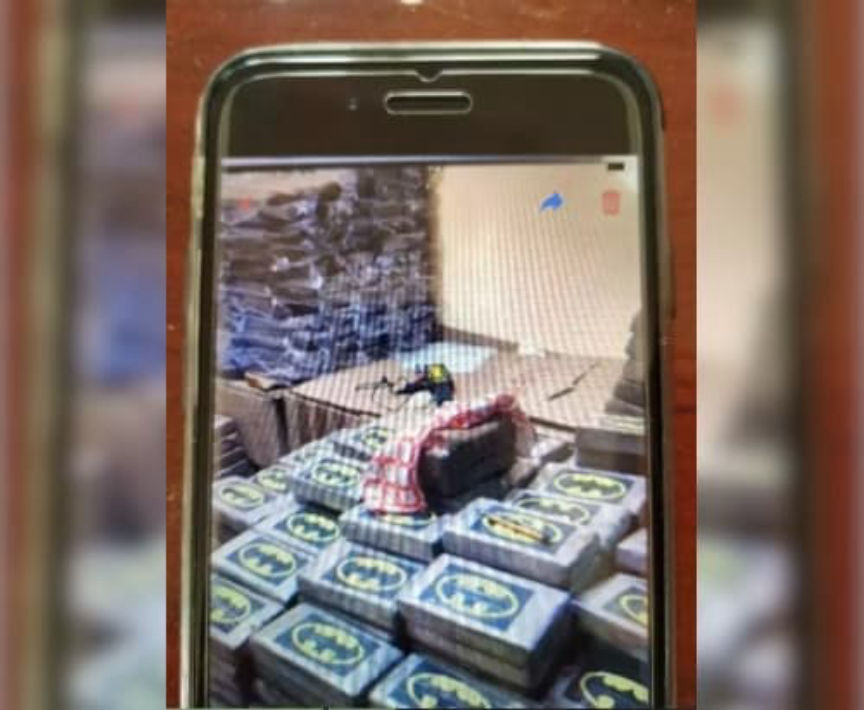
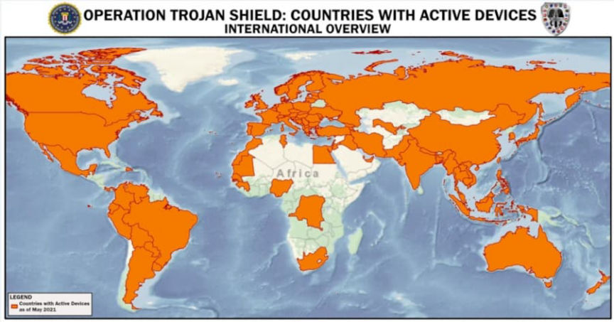
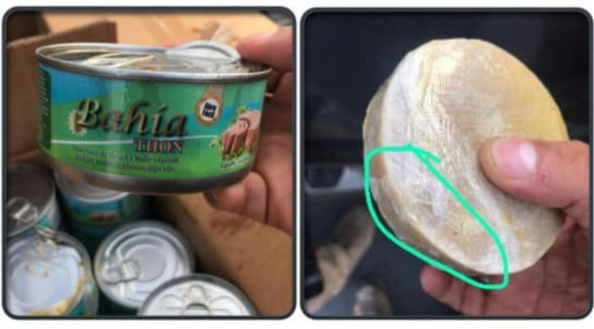
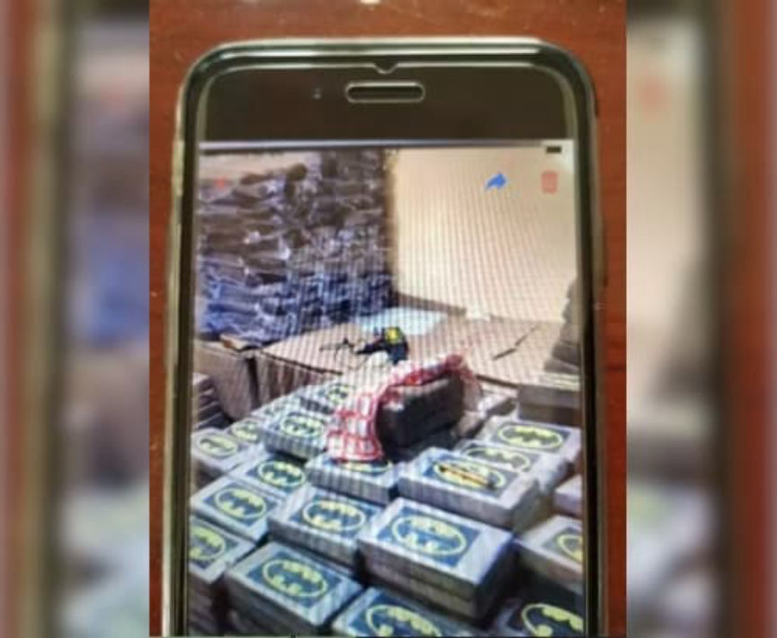
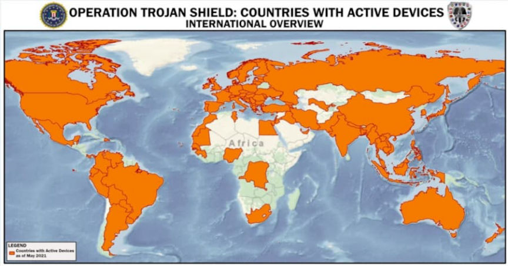
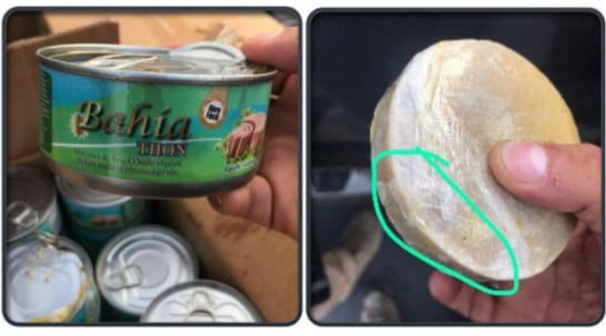

The FBI Secretly Ran an Encrypted Messaging Platform
~5 min read | Published on 2021-06-08, tagged FEDS, General-News using 1031 words.
The Federal Bureau of Investigation created its own encrypted device company and distributed thousands of devices to alleged criminals worldwide. They monitored the conversations of thousands of alleged criminals in at least 90 countries. The investigation resulted in 800 arrests worldwide. No suspects were arrested in the United States.
In 2018, after the FBI (an American law enforcement agency) had dismantled the Canadian encrypted device company Phantom Secure, an informant offered the “next generation” encrypted communication device to the FBI to use in investigations. The informant had previously distributed Phantom Secure devices to different criminal organizations. Through the informant, the FBI distributed more than 12,000 encrypted devices to alleged criminals in more than 90 countries.

Before distributing the device, the FBI “built a master key into the existing encryption system which surreptitiously attaches to each message and enables law enforcement to decrypt and store the message as it is transmitted,” according to an application for a search warrant.
By design, as part of the Trojan Shield investigation, for devices located outside of the United States, an encrypted “BCC” of the message is routed to an “iBot” server located outside of the United States, where it is decrypted from the [Informant’s] encryption code and then immediately re-encrypted with FBI encryption code. The newly encrypted message then passes to a second FBI-owned iBot server, where it is decrypted and its content available for viewing in the first instance

Through the informant, the FBI distributed some of these devices to three former Phantom Secure distributors in Australia. The Australian Federal Police obtained a court order to legally monitor the Anom devices in Australia. Roughly 50 devices were introduced to criminal groups in Australia as a part of the Anom beta test. The FBI later worked with law enforcement agencies in other countries to host their own “iBot” server and relay the messages to the FBI. By May 2021, the FBI had cataloged more than 20 million messages from a total of 11,800 devices located in more than 90 countries.

The FBI provided some example conversations between Anom users. One involved diplomatic pouches.
On March 23, 2020, the user of JID 58f4a9, who has been identified through Anom messages as Baris Tukel, asked the user of JID cfdf8a, who has been identified as Shane Geoffrey May, what the price of cocaine is at the moment. Tukel also asked if May had “that building block address.” May replied that cocaine was around the 200k mark and asked if Tukel had some news. Tukel wrote, “Ok sweet, i got a small job that popped up for [t]he building block” and “There is 2kg put inside french diplomatic sealed envelopes out of Bogotta [sic]” and “They have already got a few packages in.” Tukel added, “Only issue is that COL takes 50/4 Partners including yourself will need to split other 50” (meaning the Colombian distributors take 50% of the profits while four other people split the other 50%). Tukel wrote, “They can do it weekely [sic]” (meaning packages containing two kilograms can be sent every week). May responded that this sounded good and he would send the address shortly. Tukel then sent three photos: two of the French diplomatic pouches and one of the available cocaine to send.
And another involved Tuna.
In October 2020, a TCO orchestrated a shipment of cocaine from Ecuador to Belgium to be imported via a shipping container concealed within cans of tuna. The FBI reviewed the content of messages from the TCO. Those messages revealed that the TCO discussed the logistics of the importation, and shared container information. This information was passed to U.S. authorities in Brussels, who worked with law enforcement agencies in Belgium to search the suspected container. Upon completion of the search, law enforcement located approximately 613 kilograms of cocaine. Furthermore, information identifying the Ecuadorian tuna company was passed to law enforcement in Ecuador, which resulted in an additional seizure of approximately 1,523 kilograms of cocaine located in a container destined for Antwerp, Belgium.

On June 8, 2021, the FBI announced the results of Operation Trojan Shield. Within 48 hours of the announcement, law enforcement agencies worldwide arrested more than 500 suspects and searched 700 locations. In total, the investigation resulted in 800 arrests; the seizure of more than 8 tons of cocaine; 22 tons of marijuana; 2 tons of methamphetamine/amphetamine; six tons of precursor chemicals; 250 firearms; and more than $48 million in various worldwide currencies.
Acting U.S. Attorney Randy Grossman:
“This was an unprecedented operation in terms of its massive scale, innovative strategy and technological and investigative achievement. Hardened encrypted devices usually provide an impenetrable shield against law enforcement surveillance and detection. The supreme irony here is that the very devices that these criminals were using to hide from law enforcement were actually beacons for law enforcement. We aim to shatter any confidence in the hardened encrypted device industry with our indictment and announcement that this platform was run by the FBI.”
Suzanne Turner, Special Agent in Charge of the Federal Bureau of Investigation (FBI) - San Diego Field Office:
“Today marks the culmination of more than five years of innovative and complex investigative work strategically aimed to disrupt the encrypted communications space that caters to the criminal element. The FBI has brought together a network of dedicated international law enforcement partners who are steadfast in combating the global threat of organized crime. The immense and unprecedented success of Operation Trojan Shield should be a warning to international criminal organizations – your criminal communications may not be secure; and you can count on law enforcement worldwide working together to combat dangerous crime that crosses international borders.”
The FBI’s case resulted in the indictment of 17 foreign nationals located outside of the U.S. for alleged Racketeer Influenced and Corrupt Organizations Act (RICO) violations.
This operation is mind-boggling in scope. Read the FBI’s request for a search warrant as well as the indictment.
At anom.io, the homepage for the FBI’s company, the FBI provides former users with a form they can use to check if their account “is associated with an ongoing investigation.”
An interesting analysis of Anom is available here.
If the FBI is doing this, what is the CIA doing?
In 2018, after the FBI (an American law enforcement agency) had dismantled the Canadian encrypted device company Phantom Secure, an informant offered the “next generation” encrypted communication device to the FBI to use in investigations. The informant had previously distributed Phantom Secure devices to different criminal organizations. Through the informant, the FBI distributed more than 12,000 encrypted devices to alleged criminals in more than 90 countries.
The Anom website
Before distributing the device, the FBI “built a master key into the existing encryption system which surreptitiously attaches to each message and enables law enforcement to decrypt and store the message as it is transmitted,” according to an application for a search warrant.
By design, as part of the Trojan Shield investigation, for devices located outside of the United States, an encrypted “BCC” of the message is routed to an “iBot” server located outside of the United States, where it is decrypted from the [Informant’s] encryption code and then immediately re-encrypted with FBI encryption code. The newly encrypted message then passes to a second FBI-owned iBot server, where it is decrypted and its content available for viewing in the first instance

A picture of cocaine sent by an Anom user
Through the informant, the FBI distributed some of these devices to three former Phantom Secure distributors in Australia. The Australian Federal Police obtained a court order to legally monitor the Anom devices in Australia. Roughly 50 devices were introduced to criminal groups in Australia as a part of the Anom beta test. The FBI later worked with law enforcement agencies in other countries to host their own “iBot” server and relay the messages to the FBI. By May 2021, the FBI had cataloged more than 20 million messages from a total of 11,800 devices located in more than 90 countries.

Countries with active Anom devices
The FBI provided some example conversations between Anom users. One involved diplomatic pouches.
On March 23, 2020, the user of JID 58f4a9, who has been identified through Anom messages as Baris Tukel, asked the user of JID cfdf8a, who has been identified as Shane Geoffrey May, what the price of cocaine is at the moment. Tukel also asked if May had “that building block address.” May replied that cocaine was around the 200k mark and asked if Tukel had some news. Tukel wrote, “Ok sweet, i got a small job that popped up for [t]he building block” and “There is 2kg put inside french diplomatic sealed envelopes out of Bogotta [sic]” and “They have already got a few packages in.” Tukel added, “Only issue is that COL takes 50/4 Partners including yourself will need to split other 50” (meaning the Colombian distributors take 50% of the profits while four other people split the other 50%). Tukel wrote, “They can do it weekely [sic]” (meaning packages containing two kilograms can be sent every week). May responded that this sounded good and he would send the address shortly. Tukel then sent three photos: two of the French diplomatic pouches and one of the available cocaine to send.
And another involved Tuna.
In October 2020, a TCO orchestrated a shipment of cocaine from Ecuador to Belgium to be imported via a shipping container concealed within cans of tuna. The FBI reviewed the content of messages from the TCO. Those messages revealed that the TCO discussed the logistics of the importation, and shared container information. This information was passed to U.S. authorities in Brussels, who worked with law enforcement agencies in Belgium to search the suspected container. Upon completion of the search, law enforcement located approximately 613 kilograms of cocaine. Furthermore, information identifying the Ecuadorian tuna company was passed to law enforcement in Ecuador, which resulted in an additional seizure of approximately 1,523 kilograms of cocaine located in a container destined for Antwerp, Belgium.

On June 8, 2021, the FBI announced the results of Operation Trojan Shield. Within 48 hours of the announcement, law enforcement agencies worldwide arrested more than 500 suspects and searched 700 locations. In total, the investigation resulted in 800 arrests; the seizure of more than 8 tons of cocaine; 22 tons of marijuana; 2 tons of methamphetamine/amphetamine; six tons of precursor chemicals; 250 firearms; and more than $48 million in various worldwide currencies.
Acting U.S. Attorney Randy Grossman:
“This was an unprecedented operation in terms of its massive scale, innovative strategy and technological and investigative achievement. Hardened encrypted devices usually provide an impenetrable shield against law enforcement surveillance and detection. The supreme irony here is that the very devices that these criminals were using to hide from law enforcement were actually beacons for law enforcement. We aim to shatter any confidence in the hardened encrypted device industry with our indictment and announcement that this platform was run by the FBI.”
Suzanne Turner, Special Agent in Charge of the Federal Bureau of Investigation (FBI) - San Diego Field Office:
“Today marks the culmination of more than five years of innovative and complex investigative work strategically aimed to disrupt the encrypted communications space that caters to the criminal element. The FBI has brought together a network of dedicated international law enforcement partners who are steadfast in combating the global threat of organized crime. The immense and unprecedented success of Operation Trojan Shield should be a warning to international criminal organizations – your criminal communications may not be secure; and you can count on law enforcement worldwide working together to combat dangerous crime that crosses international borders.”
The FBI’s case resulted in the indictment of 17 foreign nationals located outside of the U.S. for alleged Racketeer Influenced and Corrupt Organizations Act (RICO) violations.
This operation is mind-boggling in scope. Read the FBI’s request for a search warrant as well as the indictment.
At anom.io, the homepage for the FBI’s company, the FBI provides former users with a form they can use to check if their account “is associated with an ongoing investigation.”
An interesting analysis of Anom is available here.
If the FBI is doing this, what is the CIA doing?